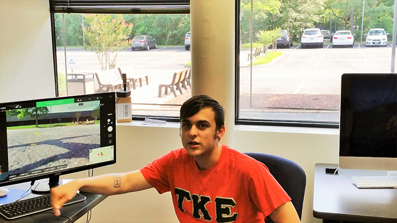
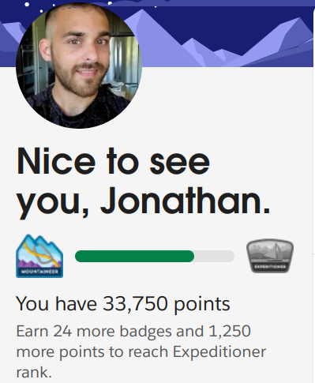
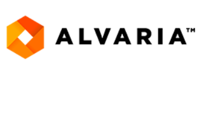
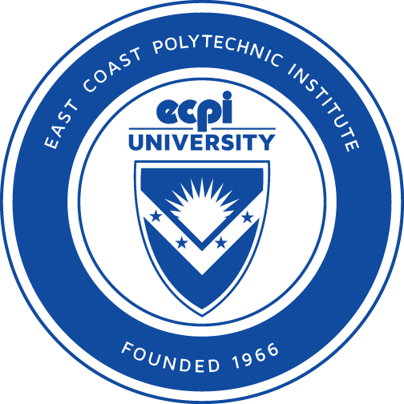

01 / Independent studio · In preparation
Yoo Shastan Development
Independent software development, Android applications and experimental projects under a dedicated studio identity.
Explore Yoo Shastan ↗Projects spanning Android audio engineering, independent software experiments and a bit of K-pop internet culture. Find the apps, repositories and creative work here.
Independent software development, Android applications and experimental projects under a dedicated studio identity.
Explore Yoo Shastan ↗A high-fidelity Android audio player featuring advanced DSP, lossless playback and optional Navidrome/Subsonic streaming.
View project & download beta ↗A colorful, unconventional K-pop-themed website and an ongoing experiment in front-end creativity.
Visit KPOPALYPSE NOW ↗Adapted an existing Magisk Tinymix installer module for the APatch root framework, experimenting with Android audio mixer access, module packaging, file permissions and startup scripts. Tested on a Pixel 8a running stock Android 15. This is an earlier learning project, not an original audio application or a currently maintained release.
Attribution: Based on Dinodva's Tinymix Manager installer module. The Tinymix utility is third-party software; the separate Tinymix Manager GUI is credited in the project documentation to 4pda developers rlh and LVware.
February 2017 - July 2020

• Featured in an ECPI web article
• Cofounded Innsbrook campus Drone Club
• Developed API used by the Campus at events

• Earned 26 badges towards Salesforce Platform Developer I credential
• Created development Orgs to build, test and deplpy Lightning Web Components and controls based on description
• Connected VSCOde to Org and committed features to Github

November 2020-April 2022
• Managed Linux and WIndows server infrastructure for hosted and premise clients, including regular maintenance and responding to system alerts
• Wrote bash scripts to automate tasks used for system checks and maintenance
• Utilized Datadog, Sumo, and proprietary tools to gather logs and data in order to gather information troubleshooting applications and infrastructure errors
• Provided remote customer support for VIA cloud, Hosted, and UIP services and infrastructure.
Including front end, customer facing issues, and back end changes using SQL Server
• Coordinated with T2 for education and support. Restructure separated the team; I started a
biweekly case review for new hires with T2. This is now being used for all new VIA hires
• Documented and report troubleshooting findings to Research and Development Team using JIRA
as well as publishing the process in Knowledge Base
June 2019 - October 2020
• Developed and supported mountjulietcafe.com and related applications with JavaScript, CSS, and HTML5
• Collaborate with Store Owner to optimize customer promotional reach using social media and web user metadata
• Diagnosed and resolved issues with website, server, and third-party integrations

Software Developer
November 2018 - May 2019
• Developed an interactive game using a Tello Drone API, VB and Excel Developer Tools
• Tested and debugged features each week for perspective student demonstrations
• Attended weekly meetings as technical lead and founding member of the Drone Club
October 2017 - October 2018
App/Hardware SVT - Corp/Lending
• Provided remote application, hardware, and network support for 300,000 users
• Achieved 97% in first call resolution, 7% above team goal
• Educated users on date security protocols, and procedures